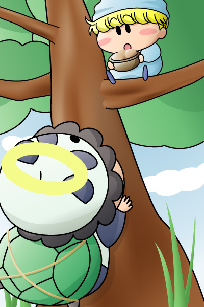

ミルモ「誰だよ、今木を揺らしたのは～？」
パンタ「は～い、ボクたんですっち！」
ミルモ「ん？ 何だ、パンタじゃねぇか」
パンタ「あなたは…かの有名なミルモ島太郎さんじゃないですっち？」
『ドラマCDシリーズ Vol.2』での場面を絵にしてみました。第２章「カメとの出会い！？」にて、木になっているくもっちょの実を食べていたミルモがパンタと出会うシーン。ミルモのツッコミをパンタは聞かず、強引に話を進めていく展開が私のお気に入りです。この後二人は竜宮城へ向かうわけですが…それは聴いてのお楽しみ！
ドラマCDは映像が無いため、それぞれの場面の風景をミルモが説明口調で語るのも注目すべきポイントですね。私が思い浮かべた風景は絵のようなイメージですが、実際はパンタが揺らすことの出来る木だからもう少し背丈が小さい木なのかもしれません。あ、木にくもっちょの実が全然なっていないのは私の手抜きです(^^;。
(2005/10/14)